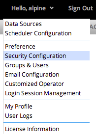

To open the Security Configuration Management dialog, click the user drop down button, then click the Security Configuration button on the drop down menu.

Alpine supports four authentication methods: Local Provider, LDAP Provider,Active Directory and Custom Provider. The Administrator must select one of the provider types.
If Local Provider is selected then there is no configuration on this page. The Groups & Users Management dialog is used to configure users and groups. See User & Groups Management for details.
When LDAP Provider is selected the user will be asked to configure LDAP settings.
Ensure a successful connection before saving configuration via the Test Connection button.
When Active Directory is selected the user will be asked to configure Active Directory settings.
Ensure a successful connection before saving configuration via the Test Connection button.
In order to use custom provider, a Java class must be provided that implements the following Java interface: com.alpine.miner.security.AuthenticationProvider
User can manually copy the jar file to: <tomcat install path>/webapps/AlpineIlluminator/WEB-INF/lib
Or package a jar file and use the above user interface to load it.